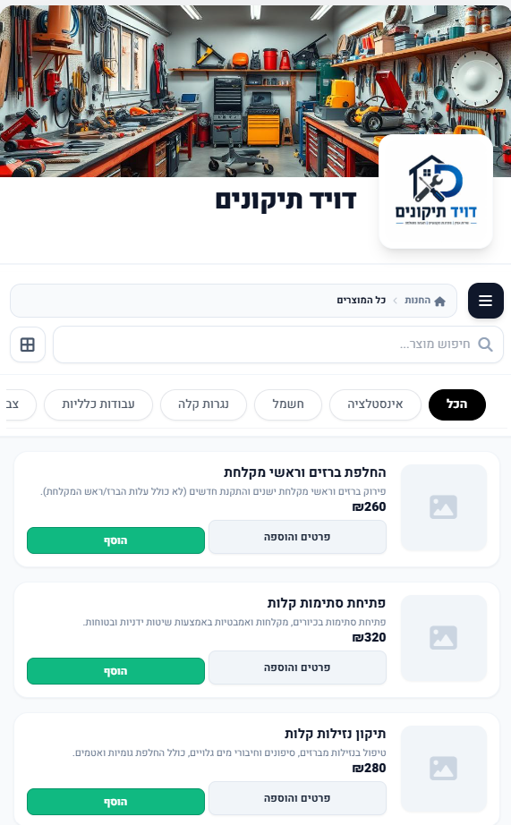
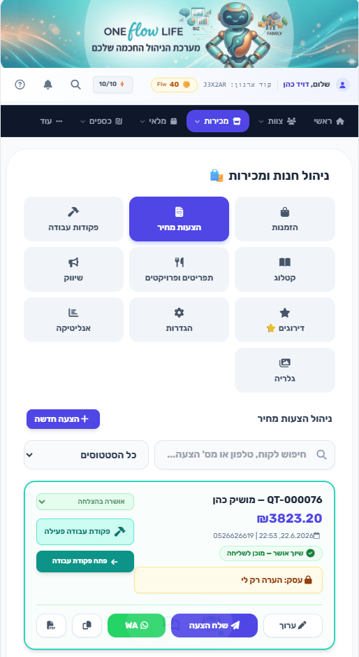
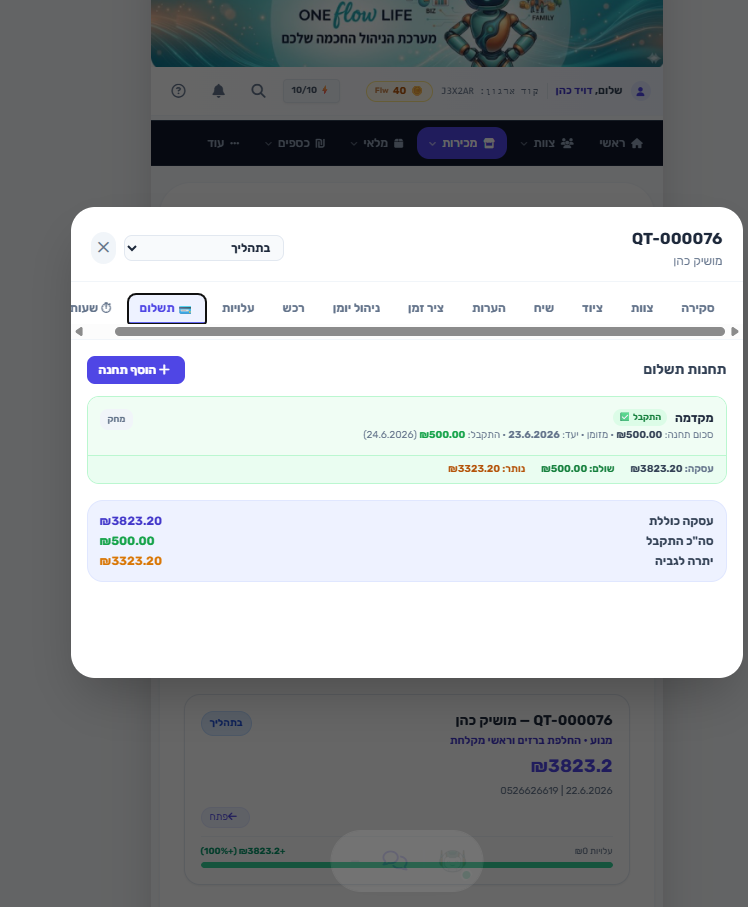
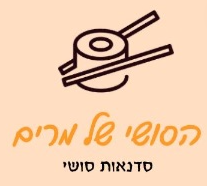
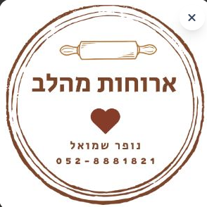

לעסקים בגוש עציון מזרח
חמש דקות.
פתח חנות.
תתחיל למכור.
חמש דקות, פתח אזור ניהול עסק: שלח הצעות מחיר, ניהול עובדים, משימות, הסמכות ומועדון לקוחות — הכול במקום אחד.
5:00
דקות לחנות פתוחה
1
מזינים שם עסק ופרטים בסיסיים
דקה
2
מוסיפים מוצר או שירות ראשון
2 דקות
3
משתפים קישור ומתחילים למכור
2 דקות
נרשמים ישר מהטלפון, בלי מחשב
מתאים לכל תחום ומקצוע
מסעדות ומזון
תיקונים והתקנות
ספורט ואימונים
יופי ואסתטיקה
ייעוץ ומומחים
לוגיסטיקה ומשלוחים
ועוד
שני מסלולים, לבחירתכם
מתחילים קטן ומוכרים, או פותחים ניהול עסק מלא — אתם בוחרים.
פתיחת חנות
מכירה בלבד: קטלוג מוצרים, קבלת הזמנות ותשלום. בשביל עסק שרוצה למכור אונליין בלי סיבוכים.
פתח חנותניהול עסק מלא
הצעות מחיר, עובדים ומשמרות, משימות, הסמכות ומסמכים, מועדון לקוחות. בשביל עסק שרוצה לנהל הכול במקום אחד.
פתח אזור ניהולבלעדי למצטרפים
חשיפה בלחיצת כפתור לקהילות צרכנים באזור
גישה ישירה לקהילות צרכנים אזוריות, ועדי עובדים וקבוצות רכישה — מאות משפחות שכבר מחפשות עסקים כמו שלכם, בלי לרדוף אחרי כל לקוח בנפרד.
מה יש באזור הניהול
חנות והזמנות
קטלוג מוצרים, עגלה וקבלת הזמנות עם תשלום — בלי צורך באתר נפרד.
הצעות מחיר
שולחים הצעת מחיר מקצועית מהטלפון, עוקבים אחרי הסטטוס עד לאישור הלקוח.
עובדים ומשמרות
סידור עבודה, שיבוץ משמרות ומעקב שעות לכל העובדים במקום אחד.
הסמכות ומסמכים
כל התעודות, ההסמכות והמסמכים של העסק והעובדים, שמורים ונגישים.
מועדון לקוחות
ניהול לקוחות חוזרים, מבצעים והטבות שמניבות הזמנות נוספות.



נבנה עבור עסקים באזור
Oneflow Life מגיע מתוך קבוצות העסקים בגוש עציון מזרח — לא כלי גלובלי גנרי, אלא מערכת שנבנתה מול עסקים שאתם מכירים.
בין העסקים שכבר הרימו סביבות אצלנו


מתאים גם מהמסך הקטן — כי משם כולם מגיעים